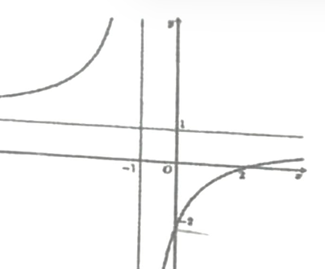
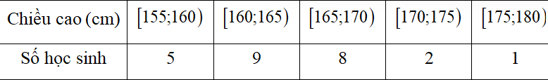

ĐỀ THI TOÁN - ĐỀ SỐ 15 HOT
Phần I: Trắc Nghiệm Nhiều Lựa Chọn
Tóm tắt kiến thức: Cấp số nhân
Công thức cấp số nhân: \( u_n = u_1 \cdot q^{n-1} \). Số hạng \( u_n = \frac{u_{n+1}}{q} \).
Câu 1:
Cho cấp số nhân \( (u_n) \) với \( u_3 = 8 \) và công bội \( q = -2 \). Giá trị của \( u_2 \) bằng:
Chọn đáp án:
Lời giải:
Ta có: \( u_2 = \frac{u_3}{q} = \frac{8}{-2} = -4 \).
Đáp án: B.
Tóm tắt kiến thức: Phương trình mặt phẳng
Phương trình mặt phẳng qua điểm \( M(x_0; y_0; z_0) \) với vector pháp tuyến \( \vec{n} = (a; b; c) \): \( a(x - x_0) + b(y - y_0) + c(z - z_0) = 0 \).
Câu 2:
Trong không gian \( Oxyz \), phương trình mặt phẳng đi qua điểm \( M(1; -2; 3) \) và có vector pháp tuyến \( \vec{n} = (2; 0; 1) \) là:
Chọn đáp án:
Lời giải:
Phương trình mặt phẳng có dạng: \( 2(x - 1) + 0(y + 2) + 1(z - 3) = 0 \Leftrightarrow 2x + z - 5 = 0 \).
Đáp án: D.
Tóm tắt kiến thức: Trọng tâm tam giác
Trọng tâm tam giác có tọa độ là trung bình cộng tọa độ ba đỉnh: \( G\left(\frac{x_1 + x_2 + x_3}{3}; \frac{y_1 + y_2 + y_3}{3}; \frac{z_1 + z_2 + z_3}{3}\right) \).
Câu 3:
Trong không gian \( Oxyz \), cho hai điểm \( A(1; 2; -1) \) và \( B(2; 4; 1) \). Trọng tâm của tam giác \( OAB \) có tọa độ là:
Chọn đáp án:
Lời giải:
Tọa độ trọng tâm là \( \left( \frac{1 + 2 + 0}{3}; \frac{2 + 4 + 0}{3}; \frac{-1 + 1 + 0}{3} \right) = (1; 2; 0) \).
Đáp án: A.
Tóm tắt kiến thức: Góc giữa hai đường thẳng
Góc giữa hai đường thẳng được xác định thông qua tính song song hoặc góc giữa các vector chỉ phương.
Câu 4:
Cho hình chóp \( S.ABC \) có đáy \( ABC \) là tam giác vuông cân tại \( A \). Gọi các điểm \( M, N \) lần lượt là trung điểm của \( SB \) và \( SC \). Khi đó góc giữa hai đường thẳng \( MN \) và \( AB \) bằng:
Chọn đáp án:
Lời giải:
Vì \( MN \parallel BC \), nên \( \angle(MN, AB) = \angle(BC, AB) \).
Mà \( \triangle ABC \) vuông cân tại \( A \), nên \( \angle(BC, AB) = 45^\circ \).
Vậy \( \angle(MN, AB) = 45^\circ \).
Đáp án: D.
Tóm tắt kiến thức: Khối lượng trung bình
Khối lượng trung bình của mẫu số liệu ghép nhóm: \( \bar{x} = \frac{\sum x_i n_i}{\sum n_i} \), với \( x_i \) là giá trị đại diện, \( n_i \) là tần số.
Câu 5:
Cân nặng (kg) của 50 quả mít trong đợt thu hoạch của một trang trại được thống kê trong bảng [bảng như sau]:
| Cân nặng (kg) | \([4; 6)\) | \([6; 8)\) | \([8; 10)\) | \([10; 12)\) | \([12; 14)\) |
|---|---|---|---|---|---|
| Số quả mít | 6 | 12 | 19 | 9 | 4 |
Chọn đáp án:
Lời giải:
Giá trị đại diện: \( [4; 6) \to 5 \), \( [6; 8) \to 7 \), \( [8; 10) \to 9 \), \( [10; 12) \to 11 \), \( [12; 14) \to 13 \).
Khối lượng trung bình: \( \bar{x} = \frac{5 \cdot 6 + 7 \cdot 12 + 9 \cdot 19 + 11 \cdot 9 + 13 \cdot 4}{50} = \frac{436}{50} = 8,72 \).
Đáp án: A.
Tóm tắt kiến thức: Bất phương trình lũy thừa
Bất phương trình \( \left(\frac{1}{a}\right)^{f(x)} \geq 1 \) (với \( a > 1 \)) tương đương \( f(x) \leq 0 \).
Câu 6:
Bất phương trình \( \left(\frac{1}{2}\right)^{x^2 - 3x} \geq 1 \) có tất cả bao nhiêu nghiệm nguyên?
Chọn đáp án:
Lời giải:
Ta có: \( \left(\frac{1}{2}\right)^{x^2 - 3x} \geq 1 \Leftrightarrow (2^{-1})^{x^2 - 3x} \geq 1 \Leftrightarrow 2^{-(x^2 - 3x)} \geq 1 \Leftrightarrow -(x^2 - 3x) \leq 0 \Leftrightarrow x^2 - 3x \leq 0 \Leftrightarrow 0 \leq x \leq 3 \).
Nghiệm nguyên: \( x = 0, 1, 2, 3 \) (4 nghiệm).
Đáp án: C.
Tóm tắt kiến thức: Nguyên hàm
Nguyên hàm của \( a^x \): \( \int a^x dx = \frac{a^x}{\ln a} + C \).
Câu 7:
Nguyên hàm của hàm số \( f(x) = 3^x \) là:
Chọn đáp án:
Lời giải:
Ta có: \( \int 3^x dx = \frac{3^x}{\ln 3} + C \).
Đáp án: C.
Tóm tắt kiến thức: Khoảng biến thiên
Khoảng biến thiên của mẫu số liệu: \( R = \max(x_i) - \min(x_i) \).
Câu 8:
Bảng thống kê dưới đây cho biết thu nhập bình quân đầu người/tháng của người dân Hà Nội (tính theo triệu đồng) từ năm 2018 đến năm 2024:
| Năm | 2018 | 2019 | 2020 | 2021 | 2022 | 2023 | 2024 |
|---|---|---|---|---|---|---|---|
| Thu nhập (triệu đồng/tháng) | 5,901 | 6,403 | 6,203 | 6,002 | 6,423 | 6,869 | 7,546 |
Chọn đáp án:
Lời giải:
Khoảng biến thiên: \( R = \max(x_i) - \min(x_i) = 7,546 - 5,901 = 1,645 \).
Đáp án: A.
Tóm tắt kiến thức: Tính đơn điệu
Hàm số nghịch biến trên khoảng \( (a; b) \) nếu \( f'(x) < 0 \). Xác định từ đồ thị hoặc bảng biến thiên.
Câu 9:
Cho hàm số bậc ba \( y = f(x) \) có đồ thị như hình vẽ:

Hàm số đã cho nghịch biến trên khoảng nào dưới đây?
Chọn đáp án:
Lời giải:
Từ đồ thị, hàm số nghịch biến trên khoảng \( (0; 1) \).
Đáp án: A.
Tóm tắt kiến thức: Thể tích lăng trụ
Thể tích lăng trụ đứng: \( V = S_{\text{đáy}} \cdot h \), với \( h \) là chiều cao.
Câu 10:
Cho khối lăng trụ đứng \( ABC.A'B'C' \) có đáy \( ABC \) là tam giác vuông cân tại \( A \), \( AB = AC = 1 \), \( AA' = 2 \). Thể tích khối lăng trụ đã cho bằng:
Chọn đáp án:
Lời giải:
Diện tích đáy: \( S_{ABC} = \frac{1}{2} \cdot AB \cdot AC = \frac{1}{2} \cdot 1 \cdot 1 = \frac{1}{2} \).
Thể tích: \( V = S_{ABC} \cdot AA' = \frac{1}{2} \cdot 2 = 1 \).
Đáp án: C.
Tóm tắt kiến thức: Tiệm cận xiên
Hàm số \( y = f(x) \) có tiệm cận xiên \( y = mx + n \) nếu \( \lim_{x \to \pm\infty} [f(x) - (mx + n)] = 0 \).
Câu 11:
Tiệm cận xiên của đồ thị hàm số \( y = x - 1 - \frac{2}{x + 1} \) là đường thẳng có phương trình:
Chọn đáp án:
Lời giải:
Ta có: \( \lim_{x \to +\infty} [y - (x - 1)] = \lim_{x \to +\infty} \frac{-2}{x + 1} = 0 \), và \( \lim_{x \to -\infty} [y - (x - 1)] = \lim_{x \to -\infty} \frac{-2}{x + 1} = 0 \).
Vậy tiệm cận xiên là \( y = x - 1 \).
Đáp án: B.
Tóm tắt kiến thức: Tích phân
Tính chất tích phân: \( \int_a^b [f(x) + c] dx = \int_a^b f(x) dx + \int_a^b c dx \).
Câu 12:
Nếu \( \int_0^2 f(x) dx = 3 \), thì \( \int_0^2 [f(x) + 2] dx \) bằng:
Chọn đáp án:
Lời giải:
Ta có: \( \int_0^2 [f(x) + 2] dx = \int_0^2 f(x) dx + \int_0^2 2 dx = 3 + 2 \cdot (2 - 0) = 3 + 4 = 7 \).
Đáp án: D.
Phần II: Trắc Nghiệm Đúng/Sai
Tóm tắt kiến thức: Hình học không gian
Tọa độ điểm, vector tích, phương trình mặt phẳng, và khoảng cách giữa đường thẳng và mặt phẳng.
Câu 13:
Cho hình chóp \( S.ABCD \) có đáy \( ABCD \) là hình chữ nhật và cạnh \( SA \) vuông góc với mặt phẳng đáy. Biết \( AB = 1 \), \( AD = 2 \), \( SA = 3 \). Xét hệ trục tọa độ \( Oxyz \) với \( O \) trùng \( A \), các tia \( Ox, Oy, Oz \) lần lượt trùng với các tia \( AB, AD, AS \) (như hình vẽ).

Xét các phát biểu sau:
Chọn đáp án cho từng phát biểu:
a)
b)
c)
d)
Lời giải:
a) Đúng. Tọa độ: \( A(0; 0; 0) \), \( B(1; 0; 0) \), \( D(0; 2; 0) \), \( C(1; 2; 0) \).
b) Sai. \( S(0; 0; 3) \), \( C(1; 2; 0) \), \( \vec{SC} = (1; 2; -3) \), \( \vec{BD} = (-1; 2; 0) \), \( [\vec{SC}, \vec{BD}] = (6; 3; 4) \neq (6; -3; 4) \).
c) Đúng. \( (P) \) chứa \( SC \), song song \( BD \), vector pháp tuyến \( \vec{n}_P = (6; 3; 4) \). Qua \( S(0; 0; 3) \), phương trình: \( 6x + 3y + 4z - 12 = 0 \).
d) Sai. \( BD \parallel (P) \), khoảng cách \( d(BD, (P)) = d(B, (P)) = \frac{|6 \cdot 1 + 0 + 0 - 12|}{\sqrt{36 + 9 + 16}} = \frac{6}{\sqrt{61}} \neq \frac{6}{61} \).
Đáp án: a) Đúng, b) Sai, c) Đúng, d) Sai.
Tóm tắt kiến thức: Xác suất
Xác suất: \( P(A) = \frac{n(A)}{n(\Omega)} \). Không gian mẫu của các lần gieo xúc xắc độc lập.
Câu 14:
Trong một trò chơi, con ngựa của bạn Toàn đang đứng ở vị trí xuất phát (như hình vẽ).

Luật chơi: Để di chuyển con ngựa, bạn Toàn cần gieo một con xúc xắc có sáu mặt cân đối, đồng chất. Ở mỗi lượt chơi, bạn có tối đa ba lần gieo. Ở lần gieo thứ nhất, con ngựa di chuyển đến ô có số thứ tự bằng số chấm gieo được. Từ những lần gieo sau, nếu tổng số chấm gieo được và số ô con ngựa đang đứng lớn hơn 6 thì con ngựa đứng yên, còn nếu tổng này nhỏ hơn hoặc bằng 6 thì con ngựa di chuyển số ô bằng số chấm gieo được. Con ngựa được gọi là về đích nếu đến được ô số 6. Xét các phát biểu sau:
Chọn đáp án cho từng phát biểu:
a)
b)
c)
d)
Lời giải:
a) Đúng. Không gian mẫu: 6. Gieo được 6: 1. \( P(A) = \frac{1}{6} \).
b) Đúng. Không gian mẫu: \( 6 \cdot 6 = 36 \). Tổng lần 1 và lần 2 bằng 6: 5 trường hợp. \( P(B) = \frac{5}{36} \).
c) Sai. Không gian mẫu: \( 6 \cdot 6 \cdot 6 = 216 \). Trường hợp tổng 3 lần gieo bằng 6: 10 trường hợp. \( P(C) = \frac{10}{216} = \frac{5}{108} \neq \frac{5}{36} \).
d) Sai. \( P(D) = P(A_1) + P(A_2) + P(A_3) \), với \( P(A_3) = P(C) + P(E) \), \( P(E) = \frac{15}{216} = \frac{5}{72} \). Tổng: \( P(D) = \frac{1}{6} + \frac{5}{36} + \frac{5}{108} + \frac{5}{72} = \frac{91}{216} \neq \frac{19}{54} \).
Đáp án: a) Đúng, b) Đúng, c) Sai, d) Sai.
Tóm tắt kiến thức: Chuyển động và tích phân
Quãng đường: \( S = \int v(t) dt \). Hàm vận tốc được xác định từ đồ thị.
Câu 15:
Một chất điểm chuyển động thẳng trong 19 giây với vận tốc \( v(t) \) (đơn vị: m/s) là hàm số phụ thuộc thời gian \( t \) (đơn vị: giây) có đồ thị như hình vẽ:

Xét các phát biểu sau:
Chọn đáp án cho từng phát biểu:
a)
b)
c)
d)
Lời giải:
Hàm vận tốc: \( v(t) = \begin{cases} 3t & \text{khi } 0 \leq t \leq 4 \\ 12 & \text{khi } 4 < t \leq 13 \\ -t^2 + 30t - 209 & \text{khi } 13 < t \leq 19 \end{cases} \).
a) Sai. Tại \( t = 19 \), \( v(19) = 0 \) m/s.
b) Đúng. \( S(4) = \int_0^4 3t dt = \frac{3}{2} t^2 \big|_0^4 = 24 \) m.
c) Đúng. \( v(t) = at^2 + bt + c \), qua \( (13; 12) \), \( (15; 16) \), \( (19; 0) \). Giải: \( a = -1 \), \( b = 30 \), \( c = -209 \). Vậy \( v(t) = -t^2 + 30t - 209 \).
d) Đúng. \( S(19) = \int_0^4 3t dt + \int_4^{13} 12 dt + \int_{13}^{19} (-t^2 + 30t - 209) dt = 24 + 108 + 72 = 204 \) m.
Đáp án: a) Sai, b) Đúng, c) Đúng, d) Đúng.
Tóm tắt kiến thức: Hàm số mũ
Hàm \( f(x) = e^{kx} \): Đạo hàm \( f'(x) = k e^{kx} \). Cực trị tại \( f'(x) = 0 \).
Câu 16:
Cho hàm số \( f(x) = e^{2x} - 2x \). Xét các phát biểu sau:
Chọn đáp án cho từng phát biểu:
a)
b)
c)
d)
Lời giải:
a) Đúng. Hàm \( f(x) = e^{2x} - 2x \) xác định \( \forall x \in \mathbb{R} \).
b) Đúng. \( f'(x) = (e^{2x})' - (2x)' = 2e^{2x} - 2 \).
c) Đúng. \( f'(x) > 0 \Leftrightarrow 2e^{2x} - 2 > 0 \Leftrightarrow e^{2x} > 1 \Leftrightarrow 2x > 0 \Leftrightarrow x > 0 \). Vậy \( S = (0; +\infty) \).
d) Sai. \( f'(x) = 0 \Leftrightarrow 2e^{2x} - 2 = 0 \Leftrightarrow e^{2x} = 1 \Leftrightarrow x = 0 \). Giá trị tại \( x = 0 \): \( f(0) = e^0 - 2 \cdot 0 = 1 \neq 0 \).
Đáp án: a) Đúng, b) Đúng, c) Đúng, d) Sai.
Phần III: Trắc Nghiệm Trả Lời Ngắn
Tóm tắt kiến thức: Góc trong không gian
Góc giữa đường thẳng và mặt phẳng được tính thông qua góc giữa đường thẳng và hình chiếu của nó trên mặt phẳng.
Câu 17:
Cho hình chóp tam giác \( S.ABC \) có đáy \( ABC \) là tam giác vuông tại \( B \), cạnh bên \( SA \) vuông góc với mặt phẳng đáy. Biết \( AB = 1 \), \( BC = \sqrt{2} \) và \( \angle[S, BC, A] = 45^\circ \). Góc giữa đường thẳng \( SC \) và mặt phẳng \( (ABC) \) bằng bao nhiêu độ?
Nhập đáp án:
Lời giải:
Ta có \( BC \perp AB \), \( BC \perp SA \), nên \( BC \perp (SAB) \Rightarrow BC \perp SB \). Vậy \( \angle[S, BC, A] = \angle SBA = 45^\circ \).
Trong \( \triangle SBA \), vuông cân tại \( A \), nên \( SA = AB = 1 \).
Tính \( AC = \sqrt{AB^2 + BC^2} = \sqrt{1 + 2} = \sqrt{3} \).
Góc \( \angle(SC, (ABC)) = \angle SCA \). Trong \( \triangle SAC \), vuông tại \( A \), \( \tan \angle SCA = \frac{SA}{AC} = \frac{1}{\sqrt{3}} = \frac{\sqrt{3}}{3} \Rightarrow \angle SCA = 30^\circ \).
Đáp án: 30.
Tóm tắt kiến thức: Khoảng cách trong không gian
Khoảng cách giữa hai điểm \( M(x_1; y_1; z_1) \), \( N(x_2; y_2; z_2) \): \( MN = \sqrt{(x_2 - x_1)^2 + (y_2 - y_1)^2 + (z_2 - z_1)^2} \).
Câu 18:
Trạm kiểm soát không lưu đang theo dõi hai máy bay. Giả sử trong không gian với hệ trục tọa độ \( Oxyz \), đơn vị đo lấy theo kilômét, tại cùng một thời điểm theo dõi ban đầu: máy bay thứ nhất ở tọa độ \( A(0; 35; 10) \), bay theo hướng vector \( \vec{v}_1 = (3; 4; 0) \) với tốc độ không đổi 900 km/h và máy bay thứ hai ở tọa độ \( B(31; 10; 11) \), bay theo hướng vector \( \vec{v}_2 = (5; 12; 0) \) với tốc độ không đổi 910 km/h. Khoảng cách an toàn tối thiểu giữa hai máy bay là 5 hải lý (khoảng 9,3 km). Nếu hai máy bay tiếp tục duy trì hướng và tốc độ bay như trên thì sau ít nhất bao nhiêu phút (kể từ thời điểm theo dõi ban đầu), hai máy bay vi phạm khoảng cách an toàn (kết quả làm tròn đến hàng phần trăm)?
Nhập đáp án:
Lời giải:
Đổi đơn vị: \( 900 \) km/h = \( 15 \) km/phút, \( 910 \) km/h = \( \frac{91}{6} \) km/phút.
Vector vận tốc máy bay 1: \( |\vec{u}_1| = m |\vec{v}_1| = 15 \Rightarrow m \cdot \sqrt{9 + 16} = 15 \Rightarrow m = 3 \Rightarrow \vec{u}_1 = (9; 12; 0) \).
Vector vận tốc máy bay 2: \( |\vec{u}_2| = n |\vec{v}_2| = \frac{91}{6} \Rightarrow n \cdot \sqrt{25 + 144} = \frac{91}{6} \Rightarrow n = \frac{7}{6} \Rightarrow \vec{u}_2 = \left( \frac{35}{6}; 14; 0 \right) \).
Vị trí sau \( t \) phút: \( M(9t; 12t + 35; 10) \), \( N\left( \frac{35}{6}t + 31; 14t + 10; 11 \right) \).
Khoảng cách: \( MN = \sqrt{\left( \frac{35}{6}t + 31 - 9t \right)^2 + (14t + 10 - 12t - 35)^2 + (11 - 10)^2} = \sqrt{\frac{505}{36}t^2 - \frac{889}{3}t + 1587} \).
Điều kiện: \( MN \leq 9,3 \Rightarrow \sqrt{\frac{505}{36}t^2 - \frac{889}{3}t + 1587} \leq 9,3 \Rightarrow 8,42 \leq t \leq 12,71 \).
Thời gian nhỏ nhất: \( t \approx 8,42 \) phút.
Đáp án: 8,42.
Tóm tắt kiến thức: Tối ưu hóa chi phí
Chi phí trung bình tối thiểu được tìm bằng cách lấy đạo hàm và tìm cực trị.
Câu 19:
Một đại lý nhập khẩu trái cây tươi để phân phối cho các cửa hàng. Mỗi lần nhập khẩu trái cây, khoản chi phí vận chuyển là 25 triệu đồng/lần. Chi phí bảo quản trái cây trong kho là 80 nghìn đồng/tạ/ngày. Thời gian bảo quản trái cây trong kho tối đa 10 ngày. Biết rằng, kể từ ngày đầu tiên nhập hàng, đại lý sẽ phân phối tới các cửa hàng 25 tạ trái cây mỗi ngày. Mỗi lần nhập hàng, đại lý phải nhập đủ trái cây cho bao nhiêu ngày phân phối để chi phí trung bình cho mỗi ngày thấp nhất (bao gồm chi phí vận chuyển và chi phí bảo quản trong kho)?
Nhập đáp án:
Lời giải:
Gọi \( x \): số ngày phân phối.
Tổng số tạ trái cây: \( 25x \).
Chi phí bảo quản: \( 25x + 25(x-1) + \dots + 25 = \frac{25x(x+1)}{2} \).
Chi phí bảo quản: \( \frac{25x(x+1) \cdot 80}{2} \) (nghìn đồng).
Tổng chi phí: \( 25000 + \frac{25x(x+1) \cdot 80}{2} \).
Chi phí trung bình mỗi ngày: \( f(x) = \frac{25000}{x} + \frac{25(x+1) \cdot 80}{2} = \frac{25000}{x} + 1000x + 1000 \).
Đạo hàm: \( f'(x) = -\frac{25000}{x^2} + 1000 = 0 \Rightarrow x^2 = 25 \Rightarrow x = 5 \).
Kiểm tra: \( x = 5 \leq 10 \), thỏa mãn. Vậy \( x = 5 \).
Đáp án: 5.
Tóm tắt kiến thức: Cực trị của hàm số
Điểm cực trị của hàm số được tìm bằng cách giải \( f'(x) = 0 \) và kiểm tra dấu đạo hàm.
Câu 20:
Đồ thị hàm số \( y = \frac{x^2}{x + 1} \) có hai điểm cực trị \( A \) và \( B \). Độ dài đoạn thẳng \( AB \) bằng bao nhiêu (kết quả làm tròn đến hàng phần chục)?
Nhập đáp án:
Lời giải:
Điều kiện: \( x \neq -1 \).
Đạo hàm: \( y' = \frac{2x(x + 1) - x^2}{(x + 1)^2} = \frac{x^2 + 2x}{(x + 1)^2} \).
\( y' = 0 \Leftrightarrow x^2 + 2x = 0 \Leftrightarrow x(x + 2) = 0 \Rightarrow x = 0 \), \( x = -2 \).
Tọa độ: \( A(0; 0) \), \( B(-2; -4) \).
Độ dài: \( AB = \sqrt{(0 - (-2))^2 + (0 - (-4))^2} = \sqrt{4 + 16} = \sqrt{20} \approx 4,47 \approx 4,5 \).
Đáp án: 4,5.
Tóm tắt kiến thức: Tích phân và diện tích
Diện tích dưới parabol: \( S = \int_a^b |f(x)| dx \). Diện tích hình tròn và hình vuông được trừ đi.
Câu 21:
Một cửa vòm có dạng hình parabol được lắp các tấm kính hình tròn đường kính 1 m và các tấm kính hình vuông có cạnh 1 m như hình vẽ.

Phần còn lại của cửa vòm được sơn màu trang trí với mức giá 1,2 triệu đồng/m². Chi phí sơn màu là bao nhiêu triệu đồng (kết quả làm tròn đến hàng phần chục)?
Nhập đáp án:
Lời giải:
Parabol: \( y = ax^2 + 4 \). Qua \( B(2; 2) \): \( 4a + 4 = 2 \Rightarrow a = -\frac{1}{2} \Rightarrow y = -\frac{1}{2}x^2 + 4 \).
Giao với \( Ox \): \( -\frac{1}{2}x^2 + 4 = 0 \Rightarrow x = \pm 2\sqrt{2} \).
Diện tích cửa: \( S_1 = 2 \int_0^{2\sqrt{2}} \left( 4 - \frac{1}{2}x^2 \right) dx = 2 \left( 4x - \frac{x^3}{6} \right) \big|_0^{2\sqrt{2}} = \frac{32\sqrt{2}}{3} \).
Diện tích không sơn: \( S_2 = 6 \cdot 1^2 + 3 \cdot \pi \cdot \left( \frac{1}{2} \right)^2 = 6 + \frac{3\pi}{4} \).
Diện tích sơn: \( S = S_1 - S_2 = \frac{32\sqrt{2}}{3} - \left( 6 + \frac{3\pi}{4} \right) \).
Chi phí: \( S \cdot 1,2 \approx 8,1 \) triệu đồng.
Đáp án: 8,1.
Tóm tắt kiến thức: Lãi kép và lợi nhuận
Lãi kép: \( A = P(1 + r)^n \). Lợi nhuận = Doanh thu - Chi phí.
Câu 22:
Anh Thắng có 500 triệu đồng và đã vay thêm ngân hàng 400 triệu đồng với lãi suất 8%/năm theo thể thức lãi kép, kỳ hạn 1 năm. Anh Thắng đã dùng toàn bộ 900 triệu đồng này để mua một mảnh đất với giá 20 triệu đồng/m². Sau đúng 2 năm, anh bán mảnh đất đó với giá 29 triệu đồng/m² và dùng số tiền thu được trả hết nợ cho ngân hàng. Hỏi sau khi trả nợ xong, anh Thắng lãi được bao nhiêu triệu đồng (kết quả làm tròn đến hàng đơn vị)?
Nhập đáp án:
Lời giải:
Lãi vay sau 2 năm: \( T = 400 \cdot (1 + 0,08)^2 - 400 = \frac{1664}{25} \) triệu đồng.
Diện tích đất: \( \frac{900}{20} = 45 \) m².
Lãi bán đất: \( 45 \cdot (29 - 20) = 405 \) triệu đồng.
Lãi ròng: \( 405 - \frac{1664}{25} = 338,44 \approx 338 \) triệu đồng.
Đáp án: 338.